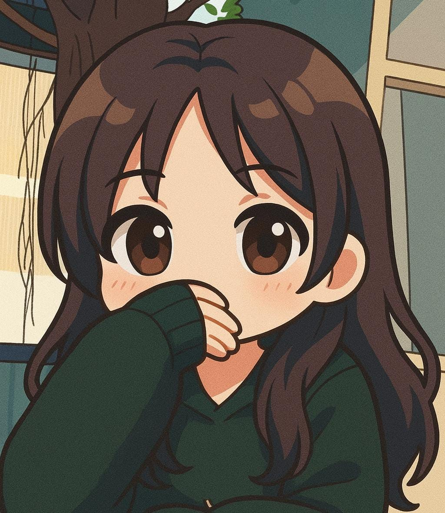
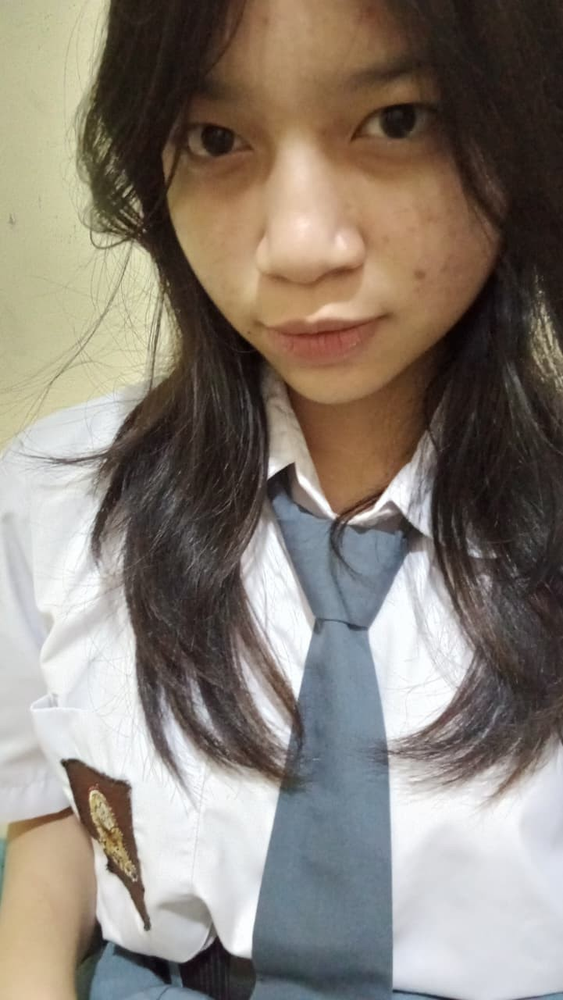
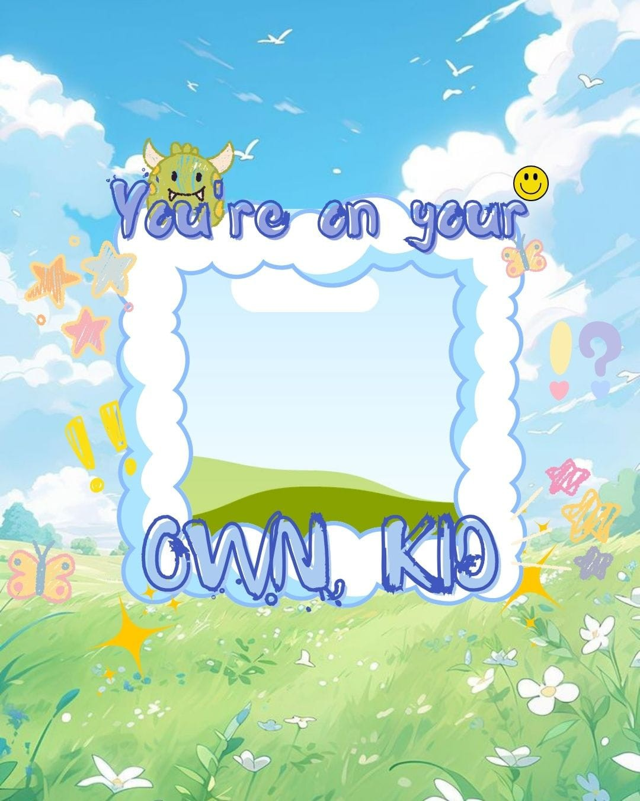

tap foto untuk flip 😊
VANESSA CALLYSTA WIJAYA
"Jadilah dirimu sendiri dan tetap mengandalkan Tuhan di setiap keadaan."
Tentang Aku
Halo, nama saya Vanessa Callysta Wijaya, atau biasa dipanggil Nessa. Saya lahir di Kota Cimahi pada tanggal 4 Maret. Saat ini saya duduk di bangku kelas 11 di salah satu sekolah di Bandung, yaitu Gracia School. Rasanya waktu berjalan begitu cepat, hingga tanpa terasa saya sudah menginjak kelas 11.Sejak kecil saya punya banyak pengalaman yang berkesan. Ketika TK, saya sering mengikuti acara-acara sekolah. Walaupun masih kecil, saya sangat antusias ikut berbagai kegiatan. Itu menjadi salah satu masa yang menyenangkan dalam hidup saya.
Kenangan masa kecil saya tidak berhenti di situ. Saat SD, ada satu momen yang benar-benar berkesan, tepatnya ketika saya kelas 3 dan mengikuti kegiatan camping di sekolah. Waktu itu, setiap ruangan diisi sepuluh orang siswa. Pada malam hari, ada hal lucu yang membuat saya dan teman-teman tidak bisa melupakannya. Adik kelas saya dibawakan Pizza Hut oleh mamanya, dan jumlahnya cukup banyak. Ketika kelas lain sudah tertidur pulas, kami justru berkumpul diam-diam, makan pizza itu dalam keadaan gelap-gelapan. Suasana terasa menegangkan sekaligus seru, apalagi ketika tiba-tiba ada guru masuk ke dalam kelas untuk memeriksa. Kami semua langsung pura-pura tidur seolah-olah tidak terjadi apa-apa. Itu adalah salah satu momen yang sampai sekarang masih saya ingat dengan jelas, karena sederhana tapi sangat menyenangkan.
Masa SD memang penuh cerita seru, tapi kalau saya diberi kesempatan kembali ke masa lalu, saya lebih memilih kembali ke masa SMP, khususnya kelas 9. Kenangan di kelas 9 begitu melekat di hati saya, terutama saat-saat menjelang kelulusan. Di waktu itu, saya dan teman-teman banyak menghabiskan waktu bersama dengan bercanda, bermain, bahkan sampai main petak umpet. Walaupun sederhana, semua momen itu terasa begitu hangat. Saya merasa benar-benar menikmati kebersamaan dengan teman-teman sebelum akhirnya kami harus berpisah melanjutkan perjalanan masing-masing.
Berbicara tentang cita-cita, sebenarnya sejak kecil saya pernah bercita-cita ingin menjadi dokter. Namun seiring bertambahnya usia, pikiran saya berubah. Setelah mempertimbangkan jurusan yang saya ambil dan mata pelajaran pilihan di sekolah, saya mulai merasa lebih cocok untuk menjadi seorang pengusaha. Ada satu alasan kuat kenapa saya memilih jalur itu: karena saya terinspirasi dari keluarga besar engkong saya. Banyak dari mereka yang berprofesi sebagai pengusaha dan berhasil meraih kesuksesan. Bagi saya, mereka terlihat keren dan mengagumkan. Saya ingin bisa mengikuti jejak mereka, membangun usaha sendiri, dan menjadi sosok yang bermanfaat bagi banyak orang.
Selain cita-cita, saya juga memiliki hobi yang cukup saya tekuni, yaitu mengedit video. Awalnya, saya mulai mengedit hanya karena iseng. Namun lama-kelamaan, saya merasa ketagihan. Editing membuat saya merasa bebas untuk menuangkan ide-ide kreatif. Hasil editan pertama saya sebenarnya menurut saya biasa saja, tidak terlalu bagus, tapi perasaan yang saya dapat ketika melihat hasilnya sungguh menyenangkan. Entah bagaimana orang lain menilainya, tapi bagi saya, itu adalah langkah awal yang berharga.
Hingga sekarang, saya masih sering menghabiskan waktu luang untuk mengedit video. Terkadang saya memang merasa bingung ketika harus memilih sound atau musik yang cocok, tapi itu bukan masalah besar. Justru dari situ saya belajar bahwa setiap proses pasti ada tantangan, dan kita harus menikmatinya.
Kalau berbicara tentang diri saya, dulu saya dikenal sebagai sosok yang sangat aktif dan bawel. Saya mudah bergaul dengan orang lain dan tidak sulit untuk mengekspresikan diri. Namun, seiring waktu, saya merasa ada perubahan dalam diri saya. Sekarang, saya cenderung lebih pemalu dan sering menutup diri dari orang lain. Walaupun begitu, saya percaya perubahan ini juga merupakan bagian dari proses perjalanan hidup saya. Saya hanya perlu belajar untuk menemukan keseimbangan, agar bisa kembali percaya diri tapi tetap lebih bijak dalam bersikap.
Selain itu, ada beberapa hal yang ingin saya tingkatkan dalam diri saya. Saya ingin belajar untuk lebih disiplin, lebih percaya diri, lebih rajin dalam berbagai hal, serta semakin dekat dengan Tuhan. Bagi saya, hubungan dengan Tuhan sangat penting karena dari situlah saya mendapat kekuatan dan semangat untuk terus maju. Saya percaya bahwa ketika saya bersandar pada Tuhan, apapun tantangan hidup bisa saya hadapi dengan tenang.
Kesimpulannya, saya adalah Vanessa, seorang pelajar yang terus berproses dan berusaha menjadi lebih baik setiap hari. Saya memiliki cita-cita, hobi, dan semangat untuk mengembangkan diri. Saya percaya suatu hari nanti saya bisa menjadi orang sukses. Pesan yang selalu saya pegang adalah: jadilah dirimu sendiri dan tetaplah mengandalkan Tuhan dalam setiap keadaan.
Asal Sekolah
SMP Gracia Bandung
SMK Gracia Bandung
Jurusan: RPL
My Projects
